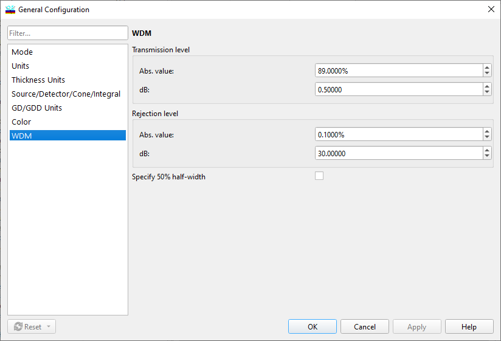

WDM options
WDM Options
Navigation: OptiLayer Menu Commands > Configuration Menu >
WDM Options
` <gd___gdd_options.html>`__ ` <idh_menu_configuration.html>`__ ` <idh_config_sorting.html>`__
Using this Configuration Option, you can customize conventions used in the WDM Filter synthesis dialog and the WDM Error Analysis command of OptiLayer.

The user can specify the Transmission level and Rejection level for setting the transmission and rejection bands of a WDM filter. Both values can be entered in absolute values and in dB. Entry fields for these values are synchronized. It is also possible to specify whether it is necessary to use a 50% half-width requirement (half-width at the transmission level of 50%). Use the “Specify 50% half-width” checkbox for this purpose.